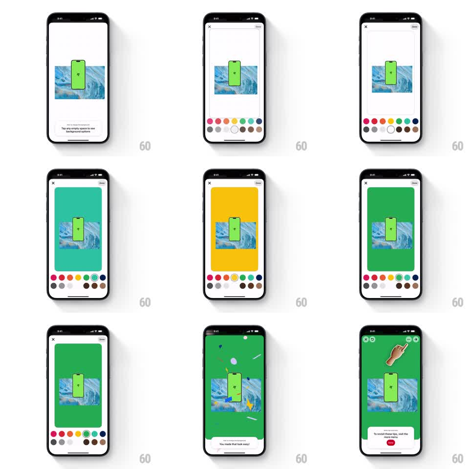

Media
Frame-by-frame

Rebuild this interaction 1:1: Pinterest's background-color onboarding - tapping empty canvas space raises a two-row color dot picker, each dot floods the canvas background with its color, a confetti burst celebrates the first pick, and a closing tooltip points at the more (three-dot) menu.

Rebuild this interaction 1:1: Pinterest's background-color onboarding - tapping empty canvas space raises a two-row color dot picker, each dot floods the canvas background with its color, a confetti burst celebrates the first pick, and a closing tooltip points at the more (three-dot) menu. ## Integration Integration: stack-agnostic spec - springs given as stiffness/damping, timed motions as duration + curve; map every value to your framework and animation library of choice. ## Scene Collage editor: image with a green phone cutout centered on canvas, tooltip "Tap any empty space to see background options", X and Done in the top corners. Picker: two rows of color dots (pink, red, orange, yellow, green, teal, blue, grays, browns) sliding up from the bottom. Celebration: confetti over a green-filled canvas, then a white tooltip "To revisit these tips, visit the more menu" with a red "Got it" button and a pointing hand. ## Motion spec Pattern: tap-to-reveal picker + instant background flood + confetti. - Tap empty canvas: tooltip fades out (150ms) as the dot picker slides up (spring ~320/26, ~300ms) with rows staggered 40ms. - Dot tap: canvas background crossfades to the chosen color (~200ms) radiating from the canvas edges inward; selected dot gets a white ring (100ms). - First pick: confetti burst - ~40 paper pieces in mixed colors ejecting from the top edge with gravity, rotation, and drift, ~1.2s to fall out. - Tooltip "You made that look easy!" slides up (250ms), then swaps to the more-menu tip: the three-dot button gets a ring highlight + a hand taps it (loop), with Got it button. - Got it dismisses with a 200ms fade-down. ## Calibration - Background flood is instant-feeling (200ms) - color picking must feel zero-cost. - Confetti fires once, on the FIRST successful pick only. ## Reduced motion Background crossfades; confetti replaced by a single check pulse. ## Don't miss - The image layers stay untouched - only the canvas background changes. - The final tip's hand points at the REAL more-menu button, ring-highlighted.